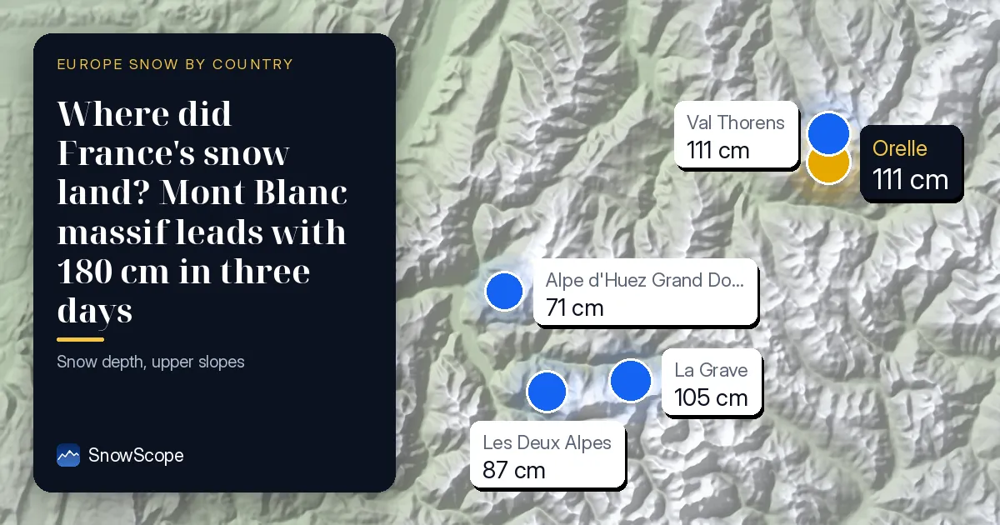
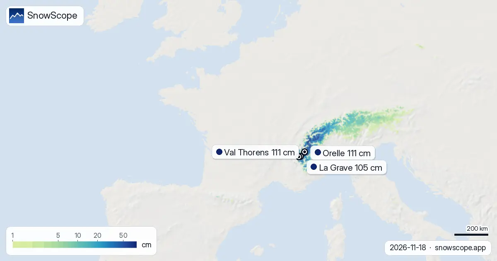

Where did France's snow land? Mont Blanc massif leads with 180 cm in three days
In the past three days, snow fell across the French Alps in a clear pattern: the highest ranges caught the most. The Mont Blanc massif in the northeast received 180 cm, while the southern Alps saw less than half that amount.
See the live snow forecast for Orelle in the SnowScope appSnow depth, powder alerts and the 3D map, free.
The snow pattern: altitude and location matter
When I look at where the new snow landed, the geography tells the story. The Mont Blanc massif, which straddles the France-Italy border and contains Europe's highest peaks, caught the heaviest falls: 180 cm in three days. The northern French Alps came next with 101 cm, and the southern French Alps received 85 cm. This is not random. These mountains face the prevailing weather systems differently, and height acts like a filter: more altitude, more snow.
Across all the high mountains we model, only about 9 percent of France's ski area has snow cover today. But above 2500 m, that changes completely: 93 percent of the terrain is white, and the average depth is 34 cm. Below 2000 m, snow is thin or absent. The snow line sits at 1900 m, so if you are planning to ski, you need to go high.
| Resort | Snow depth | New snow, 72 h | Coming, next days | Top |
|---|---|---|---|---|
| Orelle | 111 cm | 86 cm | 110 cm | 3,221 m |
| Val Thorens | 111 cm | 86 cm | 110 cm | 3,221 m |
| La Grave | 105 cm | 77 cm | 104 cm | 3,543 m |
| Les Deux Alpes | 87 cm | 59 cm | 77 cm | 3,511 m |
| Alpe d'Huez Grand Domaine | 71 cm | 59 cm | 91 cm | 3,306 m |

What fell in the past 24 and 72 hours
Yesterday alone, the wettest spot in France saw 23 cm. Over three days, the maximum reached 54 cm across a large area of the high Alps. This is genuine accumulation, not dust. About 7770 square kilometres—the size of a large region—received at least 5 cm of fresh snow in those three days. That is roughly 87 percent of the terrain where skiers can find any snow at all.
Snow cover expanded by 3010 square kilometres in a week, a strong start to the season. Yesterday, it grew by 80 square kilometres alone. These numbers sound abstract, but they mean the early-season gaps are filling in. Rocky slopes and thin patches are becoming skiable, at least at higher elevations.

Which resorts are leading now
Three resorts stand out today: Orelle, Val Thorens, and La Grave. Orelle and Val Thorens both sit at 111 cm depth and received 86 cm in three days. La Grave holds 105 cm at its measurement point, with 77 cm new snow. All three are well above 3000 m at their peaks, which explains their depth. Les Deux Alpes trails at 87 cm, and Alpe d'Huez Grand Domaine at 71 cm, both further south and lower.
Compared to past winters, Orelle is running at 93 percent of its usual mid-November depth. Val Thorens is well ahead at 215 percent of normal—it started the season early and has stacked snow fast. La Grave sits at 91 percent. These are solid numbers for November, but remember: early-season snowpack is thin and rocks hide underneath. High-altitude slopes are safer than lower ones.
What comes next: the snowiest day is November 25
More snow is coming. In the next three days (through November 21), our model forecasts up to 76 cm in the wettest spots, mostly in the high ranges. The outlook widens over seven days: the maximum could reach 150 cm, concentrated in the Mont Blanc massif and northern Alps again. On November 25, the snowiest day of the next week is expected to deliver 44 cm in the heaviest zone.
The first snow at lower elevations is forecast for tomorrow, November 19. This should push the snow line down and broaden the skiable area. By the end of next week, early December, the second week brings less snow but steady accumulation. The storm track that is feeding the Alps will not disappear quickly.
Why the pattern holds: monsoons and orography
The Mont Blanc massif is catching more snow because it rises first and highest as moist air travels inland from the Mediterranean and Atlantic. The northern Alps benefit next. The southern Alps, while high, sit in a rain shadow relative to this flow. This is classic orographic lift: air rises, cools, and drops its moisture on the windward side. The driest spots are often just downwind, a few valleys over.
This same pattern shapes the season year after year. Early winter in the French Alps often favours the north and centre over the south. If you are chasing fresh tracks and flexibility, the Mont Blanc massif and northern resorts are your target right now. The south will catch up later in December and January.
The bigger picture: a strong start
France's high-altitude ski terrain is 93 percent white above 2500 m. That is unusual for mid-November and signals a healthy early season. Over 108 of France's 223 ski areas now have measurable snow. The expansion from 7 days ago (5550 square kilometres of snow cover) to today (8560) is real progress. Within a week, that footprint could grow further.
Watch the official avalanche bulletin before heading off-piste, especially on steep north-facing slopes where new snow is deepest. Use our SnowScope app to track where snow is thickest and where the next storms will land. The mountains are responding fast this November.
Tips for skiers
- Ski above 2500 m where snow cover is 93 percent reliable. Below 2000 m, expect thin snow and exposed rocks.
- The Mont Blanc massif and northern Alps have the deepest new snow. If you have one day to ski, go there first; southern resorts will catch up in later storms.
- Early-season snow is light and can conceal hazards. Check the official avalanche bulletin before skiing off-piste, and avoid steep slopes where new snow is thickest until it settles.
- Orelle, Val Thorens, and La Grave lead in depth and fresh snow. They offer the best conditions and highest confidence for a full day of skiing.
- More snow arrives November 19 and peaks on November 25. By then, lower elevations will have better coverage and more terrain will open.
About these numbers
Resort snow depths are the deepest snow on the resort's upper slopes from the SnowScope snow model (about 1 km, run of 18 November); they are estimates for an area, not a measurement at one point. Station values are measurements on the date shown. Forecasts can change. Always read the official avalanche bulletin before going off-piste.
Cite this report
For research, teaching or the press: the numbers and charts are free to reuse under CC BY 4.0 with this citation.
SnowScope (2026), Where did France's snow land? Mont Blanc massif leads with 180 cm in three days, https://snowscope.app/blog/en/2026/11/france-where-the-snow-fell-18-november-2026.html, accessed 2026-11-18
SnowScope (Atlas Labs). (2026, November 18). Where did France's snow land? Mont Blanc massif leads with 180 cm in three days. SnowScope snow reports. https://snowscope.app/blog/en/2026/11/france-where-the-snow-fell-18-november-2026.html
BibTeX
@misc{snowscope2026francewherethesnowfell18,
author = {{SnowScope (Atlas Labs)}},
title = {Where did France's snow land? Mont Blanc massif leads with 180 cm in three days},
year = {2026},
month = nov,
howpublished = {\url{https://snowscope.app/blog/en/2026/11/france-where-the-snow-fell-18-november-2026.html}},
note = {Published 2026-11-18 11:51 UTC; accessed 2026-11-18}
}· CC BY 4.0 · Methods, data and tools →
Orelle: snow and temperature by height, this winter vs last (tools) →
Follow Orelle
Free: a message when fresh snow is coming, and the forecast every morning.
More snow reports

Les 2 Alpes reaches 3511 m for high snow in December 2026, with an adult 6-day pass priced at 266.50 EUR.

We rank French ski resorts by December snow odds and checked pass prices, starting from 36.00 EUR for an adult day pass in Les Karellis.

Ten European ski resorts ranked for December value, led by Les 2 Alpes with 75 cm of mid-mountain snow.